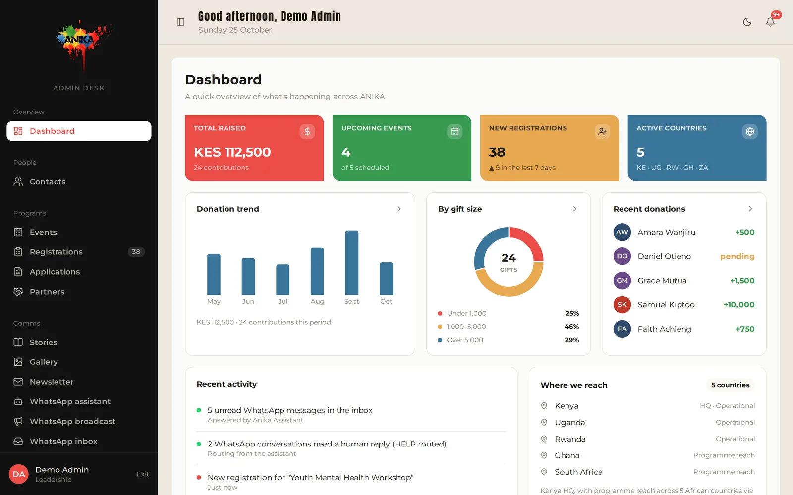
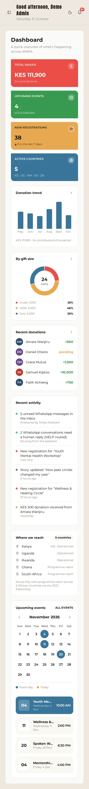

ANIKA Initiative
Website & Admin Desk
A digital platform for a Pan-African, art-based nonprofit: a public website, a role-based admin dashboard and a WhatsApp assistant. Built as our Moringa School capstone and handed over to the organisation.
- My role
- Team lead and frontend developer
- Team
- 5 developers
- Client
- ANIKA Initiative, Nairobi
The Problem
ANIKA works across five African countries using spoken word, theatre and visual art. It needed a home online where people can find events, register, read impact stories and give via M-Pesa, plus a back office where staff manage contacts, events, registrations, applications, partners and donations, and answer people on WhatsApp.
My Contribution
- Led a team of five through an iterative, client-driven process: gathering requirements, demoing progress, taking feedback and handing the platform over.
- Set up how we worked: a Git branch-and-pull-request workflow with branch protection, so five developers could build in parallel without overwriting each other.
- Built the public site in React, turning ANIKA's brand guide (colours, type, imagery) into a responsive design with multi-page navigation in React Router.
What the Team Built
- Public website: home, programmes, events with category filters and registration, impact, stories, gallery, get involved, and M-Pesa donations.
- Admin Desk: a dashboard for contacts, events, registrations, applications, partners, stories, gallery, newsletter, contributions, impact reports, team and roles & access.
- WhatsApp assistant: answers common questions automatically, routes "HELP" conversations to a person, and supports broadcasts and a shared inbox.
- Backend API: Flask with SQLAlchemy models and migrations, organised so each developer owned their own models and routes.
Tech Stack
The Website

The Admin Desk
Part content editor, part CRM. Rather than internal records, the Admin Desk is about the people the organisation reaches: contacts, partners, event registrations and applications, alongside publishing events, stories and the gallery to the website. The WhatsApp assistant adds broadcasts and a shared inbox on top.


Sample data. Click a screenshot to enlarge it.